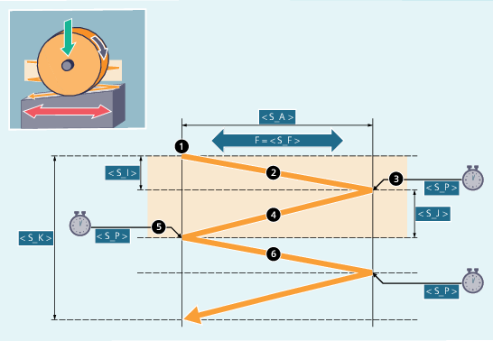

Syntax
CYCLE4078(<S_I>, <S_J>, <S_K>, <S_A>, <S_F>, <S_P>, <S_A1>, <S_A2>)Parameter
Nr. | Parameter | Datentyp | Bedeutung |
|---|---|---|---|
1 |
| REAL | Zustelltiefe vom Anfang zum Ende |
2 |
| REAL | Zustelltiefe vom Ende zum Anfang |
3 |
| REAL | Gesamtzustelltiefe |
4 |
| REAL | Schleifbreite |
5 |
| REAL | Vorschub |
6 |
| REAL | Ausfeuerzeit |
7 |
| AXIS | Zustellachse (optional) |
8 |
| AXIS | Pendelachse (optional) |
Funktion
Der Zyklus dient zum Bearbeiten mit einer Gesamtzustelltiefe mittels kontinuierlicher Zustellung. Die Zustelltiefen vom Anfang zum Ende und vom Ende zum Anfang können unterschiedlich sein.
Die Wegangaben P1 bis P4 können negativ oder positiv sein.
Die Angabe der Zustellachse und/oder Pendelachse sind optional. Wird ein bzw. beide Parameter nicht angegeben, verwendet der Zyklus die ersten beiden Geometrieachsen des Kanals.
Ist die Summe der Zustelltiefen P1 und P2 gleich 0 bzw. die Gesamtzustelltiefe gleich 0 wird nur ein Ausfeuerhub durchgeführt.
Ablauf
| Hinweis |
Der Ablauf ist mit Einzelsatz nicht unterbrechbar. |
Beispiel
Oszillieren mit:
20 mm Zustelltiefe am Anfang
10 mm Zustelltiefe am Ende
Gesamtzustelltiefe 100 mm
Hub 100 mm
Vorschub 1000 mm/min
Ausfeuerzeit 1 Sekunde
Standardgeometrieachsen
| Programmcode | |
|---|---|
| N10 T1 D1 | |
| N20 CYCLE4078(20,10,100,100,1000,1) | |
| N30 M30 |